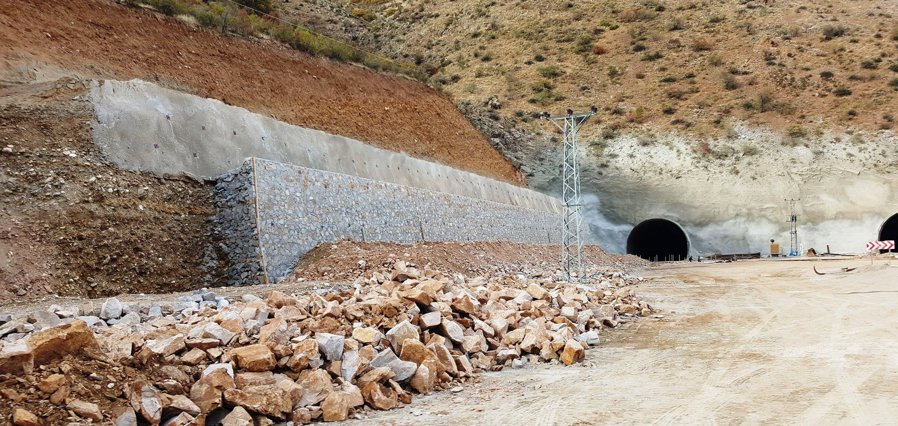

C35 beton, yüksek dayanım gerektiren projelerde kullanılan güçlü bir beton sınıfıdır. Özellikle yüksek katlı binalar, köprüler ve ağır yük taşıyan yapılarda tercih edilir. Erzurum gibi sert iklim koşullarına sahip bölgelerde ise dayanıklılığı sayesinde güvenli yapıların vazgeçilmezidir.
C35 Beton Nedir?
C35 beton, 28 günlük basınç dayanımı 35 MPa (350 kg/cm²) olan bir beton türüdür. Bu yüksek dayanım seviyesi, betonun ağır yükleri taşıyabilmesini ve uzun yıllar boyunca formunu korumasını sağlar. Standart betonlara göre daha güçlüdür ve profesyonel projelerde tercih edilir.
C35 Beton Özellikleri
- Yüksek basınç dayanımı (35 MPa)
- Ağır yük taşıma kapasitesi
- Uzun ömürlü yapı performansı
- Don ve sert hava koşullarına dayanıklılık
- Daha az çatlama riski
- Yüksek güvenlik seviyesi
C35 Beton Nerelerde Kullanılır?
- Yüksek katlı binalar
- Köprü ve viyadük projeleri
- Endüstriyel tesisler
- Fabrika zeminleri
- Ağır yük taşıyan kolon ve temeller
Erzurum'da özellikle büyük projelerde ve sağlamlık gerektiren yapılarda C35 beton tercih edilir.
C25 – C30 – C35 Beton Karşılaştırması
| Özellik | C25 Beton | C30 Beton | C35 Beton |
|---|---|---|---|
| Kullanım Alanı | Konut ve hafif yapılar | Standart bina projeleri | Yüksek dayanım ve büyük projeler |
| Dayanım (MPa) | 25 | 30 | 35 |
👉 C35 beton, bu üçlü arasında en yüksek dayanım sunan seçenektir.
Erzurum'da C35 Beton Neden Tercih Edilir?
Erzurum'da kışlar çok sert geçer, don olayları sık yaşanır, yapılar ciddi dayanım ister. Bu nedenle betonun çatlamaması, uzun ömürlü olması, yüksek mukavemet şarttır. C35 beton, bu şartlara en uygun beton sınıflarından biridir.
C35 Betonun Avantajları ve Dezavantajları
| Avantajlar | Dezavantajlar |
|---|---|
| Maksimum dayanıklılık sağlar | Diğer beton türlerine göre maliyeti daha yüksektir |
| Büyük projelerde güven verir | Küçük projeler için gereğinden fazla güçlü olabilir |
| Uzun yıllar bakım gerektirmez | |
| Zorlu hava koşullarına uyum sağlar |
👉 Bu yüzden doğru projede kullanılması önemlidir.
C35 Beton Fiyatları Erzurum 2026
C35 beton fiyatları; metreküp miktarı, şantiye uzaklığı, pompa kullanımı ve proje büyüklüğüne göre değişiklik gösterir. Genellikle C30 betona göre daha yüksek fiyatlıdır çünkü daha fazla dayanım sağlar ve daha kaliteli malzeme içerir. Güncel Erzurum C35 beton fiyatları için doğrudan iletişime geçmeniz en doğru yöntemdir.
📞 Erzurum'da C35 Beton Hizmeti
Yüksek dayanımlı C35 beton tedariği için hemen bize ulaşın. Ücretsiz keşif ve fiyat teklifi alın.
✅ Profesyonel ekip + kaliteli üretim + zamanında teslim
Sık Sorulan Sorular
C35 beton kaç günde kurur?
Standart olarak 28 gün içinde tam dayanımına ulaşır.
C35 beton nerelerde zorunludur?
Yüksek katlı ve ağır yük taşıyan yapılarda tercih edilir.
C35 beton kışın dökülür mü?
Evet, ancak Erzurum gibi bölgelerde özel önlemler alınmalıdır.